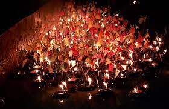
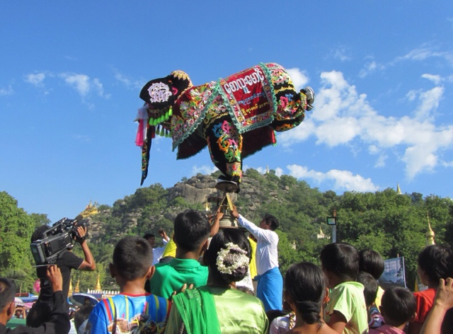

During Thadingyut, pagodas and homes through the country are decorated with electric lights, colorful paper lanterns, candles and even small ceramic saucers filled with oill in which wicis are lit. Major religious sites such as Shwedagon Pagoda are packed with pilgrims who light candles to pay homage to the Buddha and gain merit. Each light adds to the incredible spectacle of thousands of small flames burning in the night. Out on the streets, meanwhile, some people light fireworks or launch small hot-air balloons, which silently ascend and drift across the sky before burning out.



This festival is unique to Dawei and held on the full moon day. The residents would go around the town and ask for donations on the eve of the Thadingyut. Then they float the alms bowls on the river. This year’s festival will be held small-scale.

The annual festival takes place in Kyaukse, Mandalay Region, the day before the full moon day of Thadingyut for over two days.